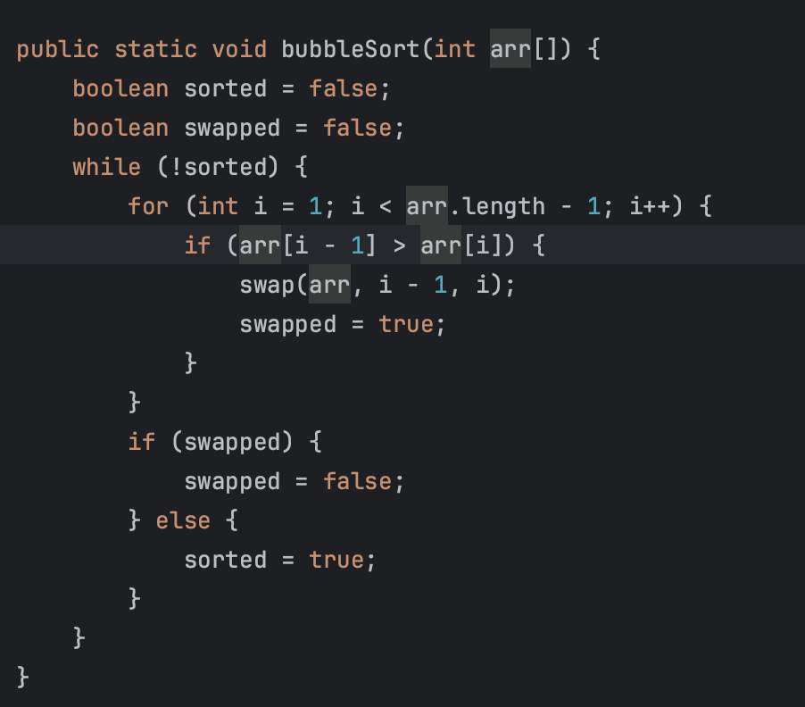
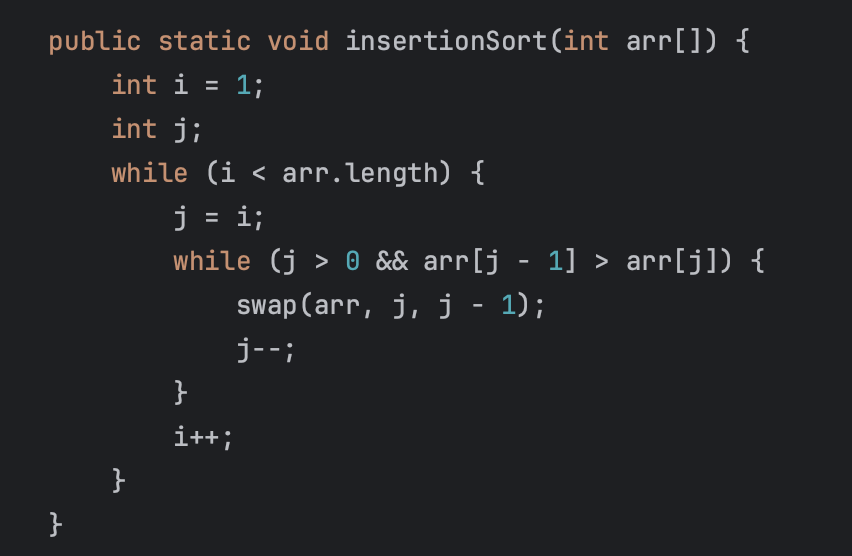
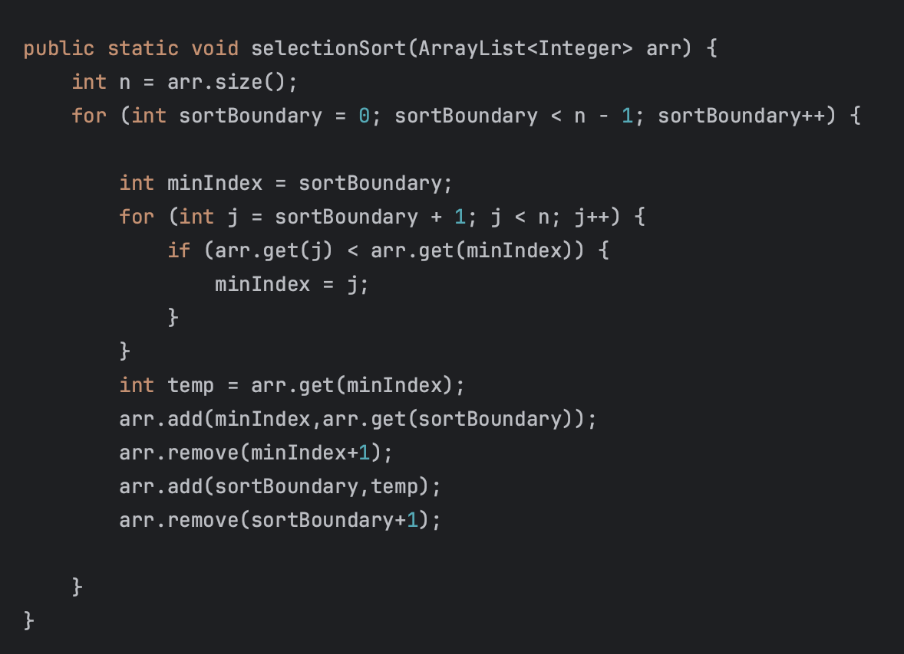

Sorting Algorithms
Sorting algorithms are used when the user needs to sort a list or array in a specific way.
Bubble Sort
Bubble sort interates through a loop comparing 2 adjacent elements. If the one to the left is larger,
swap the 2 values and continue this until the end of the loop.
Its time complexity is O(n^2) which means that although it is efficient, it is not the most efficient sorting algorithm

Visual representation of how Bubble Sort works
Code representation of how Bubble Sort works
you start by adding 2 false booleans(sorted and swapped) one for sorted and one for swapped so that the program will know when to exit.
The while is needed because as long as sorted is not true the rest of the code will run.
There is a for loop to run through all of the elements of the array, and if the element before element i is greater, the code will swap the 2 elements to ensure that they become sorted.
Afterwards the boolean swapped is true, and then swapped becomes false again. This continues until swapped is false, and then sorted would be true.
Insertion Sort
Insertion sort sorts the list of elements into a sorted and unsorted array. It starts from the beginning
it takes that value and puts it into the sorted array. It will move the values as more elements get added.
This repeats until the end of the list.
Its time complexity is O(n^2) which means that although it is efficient, it is not the most efficient sorting algorithm

Visual representation of how Insertion Sort works
Code representation of how Insertion Sort works
This code starts off by declaring ints i and j, and initializing i to 1. There is then a while which says that as long as i is smaller than the array length, run what is inside of the loop.
Afterwards, the value for i is set into j. There is then another while which says that as long as j is smaller than 0 AND array at index j-1 is greater than array at index j, run the stuff inside the loop.
The swap method is then called which is where there is an int temp, which has the value of into array with index j. Then array j-1's value is set into j, and temps value is set into j-1 and the index goes down one everytime it loops the while. I will increase every time the while is left.
Selection Sort
Selection sort interates through the entire list to find the smallest value and adds that to the beginning of the list.
This repeats until the entire list is sorted. This is more efficient than both bubble and insertion sort.
Its time complexity is O(n^2) which means that although it is efficient, it is not the most efficient sorting algorithm

Visual representation of how Selection Sort works
Code representation of how Selection Sort works
To start off there is a varible n to represent the arraylist size. Theres a for loop to ensure that all elements of the array are ran through by starting the variable at 0 and making sure its less than the arraylist size-1
The minimum index is set to the for loop variable(sortBoundary) and another for loop is implemented.
This for loop has a new variable(j) which is declared as sortBoundary + 1, and can go up to the arraylist size-1. If the element at index j is smaller than the element at minimum index, then the value from j becomes the new minimum index
Afterwards, you need to make a new int called temp, and swap it with min index. Swap min index with sortBoundary, and set temps value to sortBoundary.
Merge Sort
Merge sort breaks up the entire array into subarrays and repeats until the subarrays have a size of 1.
These smaller subarrays then get merged from smallest to largest. Merge sort is much faster than bubble,
insertion, and selection; however, merge sort uses a lot more memory than the other sorting algorithms.
Its time complexity is O(n*Log n) which means it is very efficient and fast especially with large amounts of data; however since merge sort is recursion, it uses up a lot of the computers memory

Visual representation of how Merge Sort works